En este tema aprenderemos a crear y configurar compañeros para el personaje principal, así como sus habilidades y debilidades.
Hasta ahora hemos tenido como personaje principal a Harold. Sin embargo, ha llegado el momento de conocer
mejor como está configurado y que podemos cambiar, para adaptarlo a nuestra historia.
Para empezar, presionaremos F9 para abrir la ventana de la base de datos. Dentro tendremos la siguiente
vista:
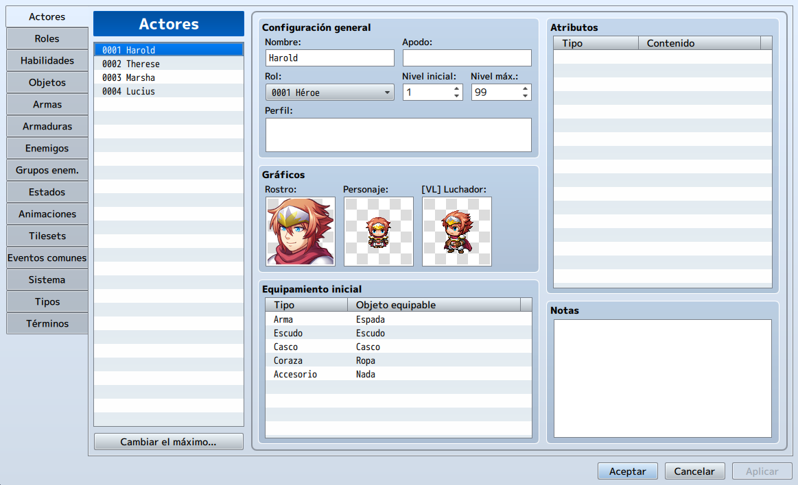
En RPGmaker, los personajes son llamados Actores y se pueden configurar de acuerdo a nuestras necesidades.
Por defecto se crean 4 actores (incluyendo al principal). Podemos cambiar la cantidad dándole al botón de
cambiar máximo.
Explicaremos cada apartado del menú:
• Configuracon General: Cubre la información básica del actor como su nombre, clase,
nivel, etc.
• Gráficos: Hay un set de 3 imágenes, podemos cambiarlas con el generador de personajes.
• Equipamiento Inicial: Define el equipo con el que iniciar el actor. En algunas
historias podríamos prescindir de este equipo, por ejemplo si el personaje inicia siendo prisionero.
• Atributos: Las características (o atributos) son un tema muy extenso en RPGmaker.
Lo trataremos en detalle más adelante en el curso.
Sin embargo, puedes ver que los cuatro actores por defecto tienen
este campo vacío. Esto se debe a que las características (o roles) las tienen las clases a las que
pertenecen y no ellos mismos.
Cada uno de los actores generados tienen su propio Rol. Por ejemplo, Harold es del Rol Héroe.
Como puedes ver, cada Rol tiene características diferentes (atributos).
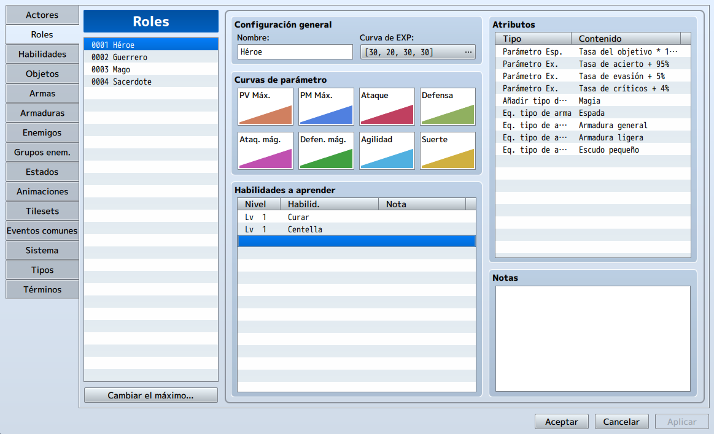
Veamos en detalle la ventana de clases.
• Configuración general: Aquí definimos los ajustes básicos del Rol.
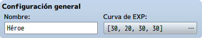
- Curva de EXP: Es una contracción de curva de experiencia. Define a que
velocidad la clase en cuestión sube de nivel basándose en ciertos parámetros que podemos ver si
hacemos click sobre los números entre corchetes.
• Curvas de Parámetro: Afecta a cómo la clase sube dichos atributos en cada nivel.
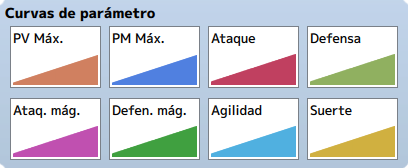
Puedes modificar el parámetro haciendo doble click. Dentro de los parámetros tenemos:
- PV Max.: Puntos de vida máximos. Si decae a cero el personaje muere y
necesitara ser revivido.
- PM Max.: Puntos mágicos máximos. Se usa para lanzar hechizos.
- Ataque: Cantidad de daño que la clase hace con un arma determinada.
- Defensa: influye sobre la cantidad de daño que el jugador recibe de los
enemigos. La formula por defecto es [ATK*4 – DEF*2].
- Ataq. Mág.: Poder de ataque mágico. Es la cantidad de daño mágico que el
jugador realiza, se puede utilizar en las formulas de hechizos para determinar su daño.
- Defen. Mág.: Poder de defensa mágico. Es la cantidad de mitigación de daño
mágico que el jugador recibe. Se puede también utilizar en las formulas de reducción de daño.
- Agilidad: Mientras mayor sea la agilidad, mayor será la velocidad del turno del
jugador.
- Suerte: A diferencia de otros juegos, en RPGmaker la suerte actuá con
aleatoriedad en muchos atributos, por ejemplo, en la posibilidad de quedar envenenando, etc.
• Habilidades a aprender: Las habilidades son un aspecto crítico en RPG maker ya que
sin ellas, el jugador solo podría atacar con su arma, lo cual seria en muchos casos insuficiente para
vencer a un jefe. Por defecto tenemos algunos ejemplos de habilidades incluidos en Harold.
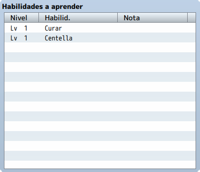
• Atributos (Características): Lista de los atributos que usará este objeto.
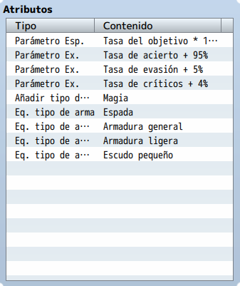
Veamos las atributos que vienen con la clase Héroe:
- Tasa del Objetivo: Determina que miembro del grupo es seleccionado como
objetivo de los enemigos. Por defecto es del 100%. En algunos casos nos puede interesar que una
clase en particular tenga una alta tasa de esta característica, ya que si queremos que sea
nuestro tanque, debe tener al que los enemigos tomen como objetivo.
- Tasa de Acierto: Determina la precisión de los ataques. La formula clásica es la
tasa base + un bonus de precisión, que puede ser añadido por alguna habilidad.
- Tasa de Críticos: Es la posibilidad del jugador de hacer un daño que sea del
triple de lo normal.
- Añadir Tipo de Habilidad: Este atributo establece qué tipo de de habilidades
usará la clase. En RPG maker tenemos dos tipos: Especial y
Mágica. Una clase necesita tener establecido un tipo de habilidades antes de
poder usarla.
- Eq. Tipo de Arma y Tipo de Armadura: Define que tipo de armas y armaduras puede
equipar la clase. Por ejemplo, un mago solo debería poder equipar togas y trajes de tela y no
armaduras pesadas.
En esta pestaña tenemos las diferentes habilidades que pueden tener los actores, ya sean mágicas o especiales.
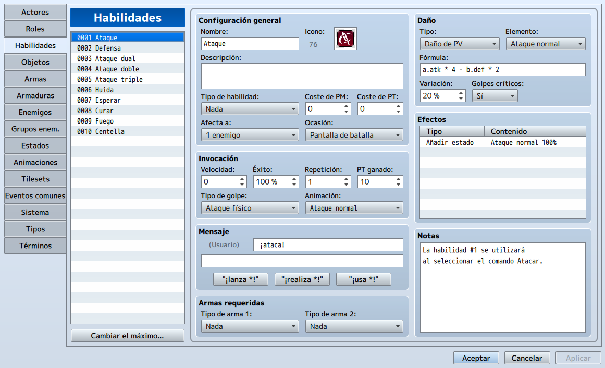
Entre las opciones de configuración tenemos:
• Configuración General: Especifica los valores básicos de la habilidad.
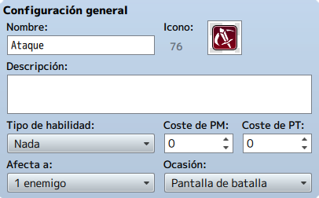
- Tipo de Habilidad: Denota que categoría de habilidad debe ser desbloqueada por
el jugador antes de poder usarla.
- Costes de Puntos Mágicos: Cantidad de puntos mágicos que consume la habilidad.
- Costes de Puntos de Técnica: Cantidad de puntos de técnica que consume la
habilidad. Los puntos de técnica se ganan cuando el jugador recibe daño o utiliza habilidades.
- Afecta a: Alcance. Define a cuantos enemigos afecta el ataque, en este caso
solo afecta a uno.
- Ocasión: Define cuando puede usarse la habilidad.
◦ Siempre: La habilidad puede usarse fuera y dentro del combate.
◦ Pantalla de Batalla: La habilidad solo se puede usar en combate.
◦ Pantalla de Menú: La habilidad solo se puede usar en el menú del jugador.
◦ Nunca: La habilidad no puede usarse. Podemos disponer de ella en un
evento por ejemplo.
• Daño: Además de su nombre, podemos desglosar ciertas características:
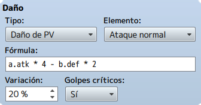
- Tipo: Define el tipo de efecto que tendrá la habilidad.
- Elemento: Determina el tipo de elemento de la habilidad.
- Fórmula: Aquí se define matemáticamente cual es la cantidad de daño que hará la
habilidad. Explicaremos esto mas adelante. Por ahora debes saber que la letra a designa al
usuario de la habilidad y la letra b al objetivo de la habilidad. Los estados que podemos tener
en cuenta son:
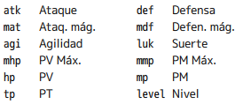
- Variación: Determina el grado de variabilidad del daño de la habilidad. Por
ejemplo si una habilidad hace 100 puntos de daño y la varianza esta al 20%, el daño en el
objetivo estará en un intervalo entre 80 y 120 puntos.
- Golpes Críticos: Determina si la habilidad puede hacer golpes críticos o no.
• Efectos: Esto es para las habilidades lo que las características (atributos) son
para los actores. Podemos añadir diferentes efectos dependiendo de nuestras necesidades.
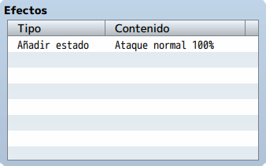
• Invocación: Define la habilidad en si misma.
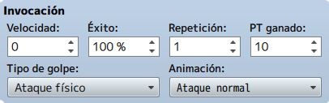
- Velocidad: Ajusta la agilidad del usuario hacia arriba o hacia abajo mientras
se use la habilidad.
- Éxito: Define el porcentaje de éxito de la habilidad, puede que algunos casos
quieras un porcentaje bajo como en habilidades que maten de un solo uso, etc.
- Repetición: Define cuantas veces se realiza la habilidad con una sola
invocación.
- TP Ganado: Es la cantidad de Puntos Técnicos que gana el jugador cada vez que
usa la habilidad.
- Tipo de Golpe: Tenemos tres posibilidades:
◦ Golpe Certero: Una habilidad con esta característica ignora la precisión
del jugador y el indice de evasión del enemigo, por lo que tendrá un 100% de precisión.
◦ Ataque Físico: Una habilidad con esta característica utiliza la precisión
del jugador y el indice de evasión del enemigo para definir la tasa de éxito.
◦ Ataque Mágico: Una habilidad con esta característica utiliza la
tasa de evasión mágica del objetivo para definir la tasa de éxito.
- Animación: Es la animación que se muestra cuando se lanza la habilidad.
• Mensage: Es el texto que se mostrará cuando se lanza el ataque.
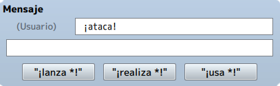
• Arma Requerida: Define con que armas se usará la habilidad. Es una característica restrictiva.
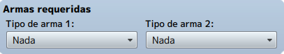
Una vez que ya hemos visto a fondo la configuración de la base de datos con respecto a los actores, ahora
veremos como añadir compañeros de equipo.
Antes que nada, recordemos que por defecto RPG maker nos asigna 4 compañeros por lo que si queremos iniciar
la aventura solos, debemos configurar la base de datos.
Para ello, buscaremos en base de datos la pestaña de Sistema y en la parte superior izquierda buscaremos
las opciones de grupo inicial y eliminaremos a cada compañero a excepción de Harold.
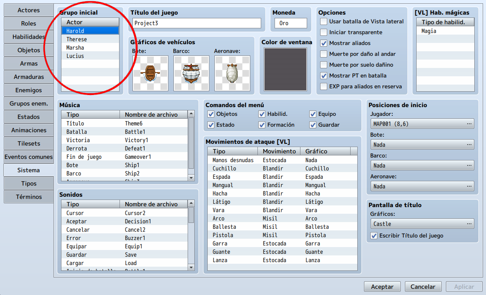
Si queremos añadir seguidores, bastará con crear un evento que añada la opción de cambiar el número del grupo, dentro tener marcada la opción de añadir y seleccionar al actor que deseamos.